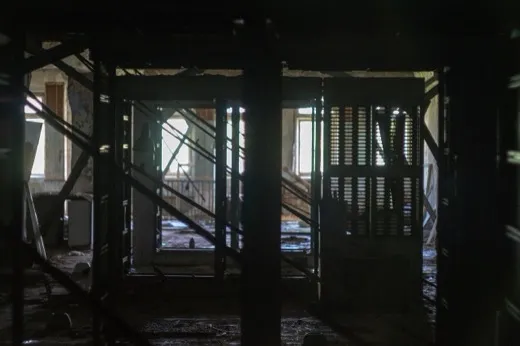
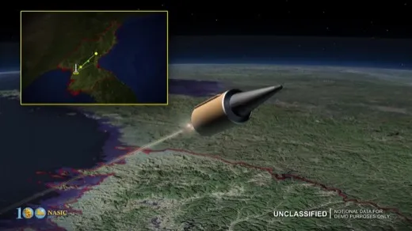
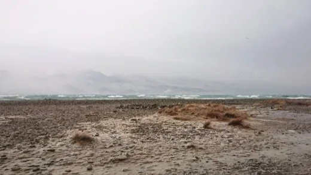
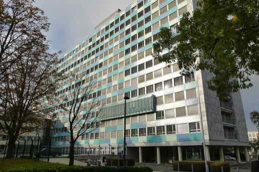
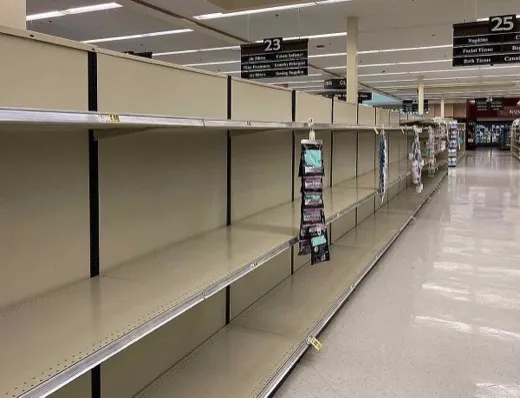
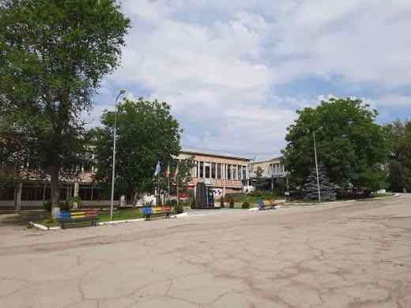
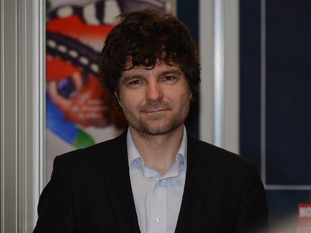
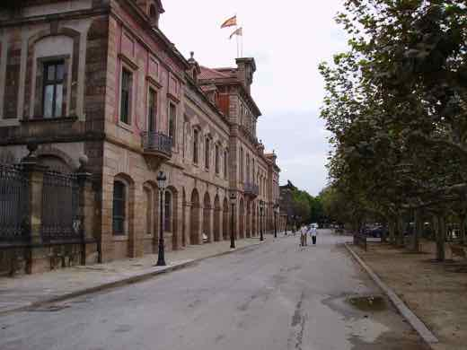
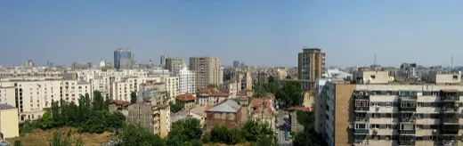
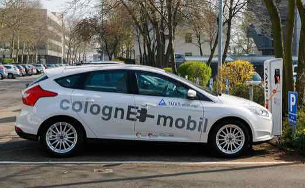

✅ Probat
Afirmații susținute de dovezi verificabile. Sursele sunt lângă fiecare, ca să le puteți controla singuri.
765 verificări, cele mai noi întâi. Vezi și: ❌ Contrazis · ⚠️ Contestat · 🔍 În verificare
Andrew și Tristan Tate, arestați la Miami la cererea Marii Britanii — 59 de capete de acuzare, pe lângă dosarul încă deschis din România
Andrew și Tristan Tate, cetățeni americano-britanici cunoscuți din dosarul DIICOT deschis în România din 2022, au fost arestați de autoritățile federale…

Administrația Trump oprește finanțarea Medicaid pentru tratamente de tranziție de gen la minori — asociațiile medicale mari anunță proces
Administrația Trump, prin CMS (Centers for Medicare and Medicaid Services), condusă de Dr. Mehmet Oz, a anunțat pe 11 august 2026 o regulă finală prin care…

SUA, prima țară care autorizează companii private să ducă operațiuni cyber ofensive contra grupurilor criminale străine
Președintele Donald Trump a semnat pe 12 august 2026 un memorandum prezidențial de securitate națională (NSPM) care creează, pentru prima dată în SUA, un…

Coreea de Nord a lansat a doua rachetă balistică într-o săptămână, Japonia a protestat oficial
Coreea de Nord a lansat, miercuri 12 august 2026 dimineața, o rachetă balistică din zona Wonsan, care a zburat peste 700 km și a căzut în afara zonei…
Houthi au lovit cu rachete o navă comercială în Bab al-Mandeb — cifra morților diferă între surse
Nava de cargo Tihamah, deținută de o companie egipteană, a fost lovită marți, 11 august 2026, cu rachete balistice în strâmtoarea Bab al-Mandeb. Guvernul…

Cutremur în Vrancea, marți seara — magnitudinea inițială 4,5 revizuită de INFP la 4,3
Un cutremur s-a produs marți, 11 august 2026, ora 20:21, în zona seismică Vrancea, resimțit până la București, Brașov și Constanța. Prima estimare automată a…

O judecătoare federală extinde la nivel național blocarea ordinului lui Trump privind votul prin corespondență
🌍 Judecătoarea federală Indira Talwani (Massachusetts) a extins, pe 11 august 2026, la nivel național injoncțiunea care blochează Secțiunea 3 din Ordinul…

Ucraina afirmă că a avariat 4 nave de război rusești în atacul asupra bazei navale Novorossiysk
🌍 În noaptea de 11 spre 12 august 2026, Ucraina a lovit baza navală rusă din Novorossiysk cu drone și rachete Neptune. Statul Major ucrainean susține că a…

Inflația din Germania urcă la 2,8% în iulie, peste așteptările pieței — Destatis leagă creșterea de finalul subvenției la carburanți
🌍 Rata anuală a inflației în Germania a urcat la 2,8% în iulie 2026, de la 2,3% în iunie, peste consensul analiștilor de 2,7%. Oficiul federal de statistică…
Ucraina rămâne fără rachete Patriot: Europa "a ajuns la limită", iar Trump refuză cererea de 300 de interceptoare
Cu iarna rusă de atacuri cu rachete apropiindu-se, Ucraina și partenerii europeni caută cu disperare interceptoare Patriot. Stocurile americane s-au redus…

Denis Popescu doboară recordul național la 100 m fluture la Europenele de la Paris, dar ratează finala
Denis-Laurean Popescu a înotat 51.44 secunde în seriile de 100 m fluture de la Campionatele Europene de la Paris (12 august 2026), doborând vechiul record…

David Popovici ia aurul la 100 m liber la Europenele de la Paris, cu un nou record al competiției — al treilea titlu la rând
În finala de miercuri seară de la Campionatele Europene de la Paris, David Popovici a câștigat aurul la 100 m liber cu timpul de 46,56 secunde — cel mai bun…
Medicaid nu va mai plăti, din octombrie, tratamentele de tranziție de gen pentru minori — anunț al administrației Trump prin Mehmet Oz
La direcția președintelui Donald Trump, administratorul programului federal Medicaid, Mehmet Oz, a anunțat pe 11 august 2026 că Medicaid și CHIP nu vor mai…

SUA: progresista Peggy Flanagan câștigă primarele din Minnesota, cursă strânsă în Wisconsin și Carolina de Sud
Șase state americane au votat marți, 11 august 2026, în primare pentru alegerile de mid-terms din noiembrie. Cele mai disputate: în Minnesota…

CCR amână decizia pe Legea Integrității pentru 17 august, în plin termen PNRR
Curtea Constituțională a amânat miercuri, 12 august 2026, decizia pe sesizările de neconstituționalitate depuse la noua Lege a Integrității — una a…
Locuitori din sudul Bucureștiului au protestat la Garda de Mediu din cauza mirosurilor de la groapa Vidra
Zeci de locuitori din sudul Capitalei și din Ilfov au protestat pe 11 august 2026 la sediul Gărzii Naționale de Mediu, cerând monitorizare permanentă și…
Carburanții s-au scumpit din nou pe 12 august, dar legea promulgată de Nicușor Dan promite reduceri de preț de la 16 august
Benzina și motorina s-au scumpit din nou miercuri, 12 august 2026, cu până la 20 de bani pe litru la marile rețele — motorina a trecut de 10,7 lei/litru. În…

Din 12 august, ambalajele din UE trebuie să fie reciclabile sau reutilizabile — noile reguli, valabile și în România
De pe 12 august 2026, Regulamentul UE privind ambalajele și deșeurile de ambalaje (PPWR) intră în aplicare în toate statele membre, inclusiv România. Prima…
România a doborât un record de consum de energie, în timp ce Unitatea 2 de la Cernavodă intră în oprire din cauza secetei
Marți seara, 11 august 2026, consumul de energie electrică al României a trecut de 8.000 MW — un nou record — chiar în timp ce centrala de la Cernavodă a…

Angajații BRD intră în grevă de avertisment pe 13 august, după ce peste 95% au respins oferta băncii
Salariații BRD Groupe Société Générale, reprezentați de Sindicatul IMPACT, organizează joi, 13 august 2026, între orele 15:00 și 17:00, o grevă de…

Inflația anuală a coborât la 8,16% în iulie, dar chiriile s-au scumpit cu peste 42%
Institutul Național de Statistică a anunțat, pe 12 august 2026, că rata anuală a inflației a scăzut la 8,16% în iulie, de la 10,42% în iunie. Scăderea e…
Putin amenință cu „măsuri-oglindă” dacă Occidentul continuă să rețină nave din „flota fantomă” rusă
Președintele rus Vladimir Putin a declarat miercuri, 12 august 2026, aflat la bordul crucișătorului Varyag, în timpul exercițiilor Flotei Pacificului lângă…

Legea salarizării rămâne fără acord după patru ore de discuții la Cotroceni — Nicușor Dan dă o săptămână de răgaz
Întâlnirea de aproape patru ore de marți seara, 11 august 2026, de la Palatul Cotroceni, dintre președintele Nicușor Dan și liderii Grindeanu (PSD), Bolojan…
UE renunță la termenul de lansare a ETIAS pentru 2026 — sistemul de autorizare pentru călătoriile în Schengen alunecă spre 2027
Site-ul oficial ETIAS a eliminat trimestrul patru din 2026 ca țintă de lansare și indică acum doar că sistemul „nu este în prezent în funcțiune”. Sistemul de…
Zelenski spune că Ucraina a transmis propuneri negociatorilor americani pentru încheierea războiului
În mesajul video de marți seara, 11 august 2026, președintele Volodimir Zelenski a declarat că Ucraina a transmis negociatorilor americani propuneri pentru…

Consumul românilor a scăzut 11 luni la rând — iunie 2026, cea mai severă contracție din interval
Datele publicate de Institutul Național de Statistică pe 6 august 2026 arată că volumul vânzărilor cu amănuntul din România a scăzut, față de aceeași lună a…

Trump nu exclude declararea unei „urgențe de securitate națională” legate de alegerile din 2026
Într-un interviu difuzat luni, 11 august 2026, la emisiunea „Real America's Voice”, gazda Wayne Allyn Root i-a sugerat lui Donald Trump să declare o „urgență…

Iranul anunță șase numiri militare de vârf, după ce comandanții anteriori au fost uciși în atacurile israeliano-americane
Ce SUSȚIN agențiile de stat iraniene IRNA și rusă Sputnik: pe 10 august 2026, liderul suprem Mojtaba Khamenei a emis decrete prin care a numit șase…

Atac rusesc ucide cel puțin 12 oameni în Ucraina; Zelenski spune că Rusia a folosit rachete balistice nord-coreene
În noaptea de 10 spre 11 august 2026, un atac rusesc a ucis cel puțin 12 oameni în Ucraina, șapte dintre ei muncitori la combinatul siderurgic Zaporizhstal…
Comisia Europeană respinge „trucul” prin care România voia să închidă termocentralele pe cărbune doar pe hârtie
Comisia Europeană a respins mecanismul prin care România voia să reducă doar „pe hârtie” puterea licențiată a unor termocentrale pe cărbune, în loc să le…

Focarul de Ebola din RD Congo trece de 2.000 de morți — cel mai rapid focar înregistrat vreodată în țară
Autoritățile din Republica Democratică Congo au anunțat pe 11 august 2026 că focarul de Ebola cu tulpina rară Bundibugyo a trecut de 2.011 morți din 4.381 de…
SUA dezactivează cu rachete Hellfire o navă sub pavilion Panama care încerca să spargă blocada navală asupra Iranului — Trump vorbește de „control total” în Hormuz
Pe 11 august 2026, un elicopter american a tras două rachete Hellfire asupra cargobotului „Vela Nova”, sub pavilion Panama, în Golful Oman — a treia navă…

Căldura și seceta din vara 2026 ar putea șterge aproape toată creșterea economică a UE — estimare de 180 de miliarde de euro, spune banca Triodos
Banca olandeză Triodos a publicat pe 10 august 2026, într-o analiză reluată de Reuters, o estimare potrivit căreia valurile de căldură și seceta din această…

Fitch menține ratingul României la BBB-, după ce Guvernul a contestat decizia inițială a comitetului de rating
Pe 31 iulie 2026, agenția Fitch a confirmat ratingul suveran al României la BBB- (ultima treaptă „investment grade”), cu perspectivă negativă. Un detaliu…

Două drone Gerbera, distruse de scafandrii militari lângă platforma Neptun Deep — Ucraina confirmă că nu sunt ale ei
Pe 11 august 2026, o navă civilă a semnalat două drone de tip Gerbera, posibil încărcate cu explozibil, aflate în derivă lângă platforma de gaze Neptun Deep…

Hidroelectrica a raportat profit record în S1 2026 — dar seceta de vară amenință a doua jumătate a anului
Hidroelectrica, cel mai mare producător de energie electrică al României, a raportat pentru primul semestru din 2026 un profit net de 2,571 miliarde lei…

USR și PNL au depus sesizarea la CCR pe Legea Integrității — termen de judecată 12 august, cu 800 de milioane de euro din PNRR pe masă
USR și PNL au depus, pe 6 august 2026, sesizarea la Curtea Constituțională împotriva a două amendamente din Legea Integrității adoptată de Senat pe 5 august…

Nicușor Dan a sesizat el însuși CCR pe Legea Integrității, la două zile după ce Senatul a adoptat-o
Președintele Nicușor Dan a trimis luni, 10 august 2026, o sesizare de neconstituționalitate la CCR pe Legea Integrității — separată de cea depusă anterior de…

Nicușor Dan a sesizat CCR pe legea integrității, la doar câteva zile după votul final din Parlament
Pe 10 august 2026, președintele Nicușor Dan a depus la CCR o sesizare proprie împotriva Legii Integrității, votată final de Parlament pe 5 august (subiectul…
Republicanii din Carolina de Sud au votat azi într-un primar aglomerat pentru a-l înlocui pe Lindsey Graham
🌍 Zece republicani, inclusiv Darline Graham — sora senatorului Lindsey Graham, decedat pe 11 iulie 2026 — au candidat marți, 11 august 2026, într-un primar…

Arabia Saudită, Turcia și Pakistanul semnează la Mecca un pact de apărare comună — „NATO musulman” sau simbol politic?
Pe 7 august 2026, la Mecca, liderii Arabiei Saudite (Mohammed bin Salman), Turciei (Erdoğan) și Pakistanului (Shehbaz Sharif) au semnat un acord prin care un…

Alabama votează marți în a doua rundă de primare din 2026, după o redesenare a hărții electorale care avantajează republicanii
Alegătorii din patru districte congresionale din Alabama (1, 2, 6 și 7) votează marți, 11 august 2026, în primare speciale organizate după ce statul și-a…

Cutremur de 7,4 în vestul Columbiei — cel mai puternic din acest secol, bilanțul morților crește rapid
Un cutremur de magnitudine 7,4 a lovit luni, 10 august 2026, vestul Columbiei, lângă San José del Palmar (Chocó) — cel mai puternic din țară în acest secol…
A doua închidere de aeroport în Germania în șase zile: dronă lângă Hannover, după drona cu exploziv de la Leipzig
Aeroportul din Hannover și-a suspendat operațiunile pentru puțin peste o oră, în noaptea de luni spre marți, 11 august 2026, după ce un pilot a semnalat o…
Dinamo zdrobește FC Voluntari, 4-0, în etapa a 4-a din SuperLiga
Sâmbătă, 8 august 2026, Dinamo București a învins categoric FC Voluntari, scor 4-0, în etapa a 4-a din SuperLiga. Poziția exactă a lui Dinamo în clasament…

Meloni și Frederiksen, mesaj comun: cer centre de repatriere în afara UE și „reguli mai dure” pe migrație
Premierii Italiei (Giorgia Meloni) și Danemarcei (Mette Frederiksen) au publicat, pe 10 august 2026, o declarație comună prin care cer o politică UE mai dură…
Piața auto din România a scăzut cu 28% în iulie, dar electricele și plug-in hybrid cresc puternic
Asociația Producătorilor și Importatorilor de Automobile (APIA) a anunțat pe 11 august 2026 că înmatriculările de autoturisme noi au scăzut cu 28% în iulie…

Consilierul prezidențial Radu Burnete: „E foarte posibil ca anul ăsta să încheiem cu o recesiune”
Radu Burnete, consilierul prezidențial pentru politici economice și sociale al lui Nicușor Dan, a declarat luni, 10 august 2026, într-un interviu pentru…

Zelenski, la Belgrad: „poziția Ucrainei privind Kosovo rămâne neschimbată” — Priștina reacționează prin retragerea steagului ucrainean
În prima sa vizită oficială la Belgrad (7-9 august 2026), președintele ucrainean Volodimir Zelenski a reafirmat, la o conferință de presă alături de…
Carolina de Sud votează azi în alegerile primare speciale republicane pentru locul din Senatul SUA rămas vacant după moartea lui Lindsey Graham
Senatorul republican Lindsey Graham a murit pe 11 iulie 2026, la 71 de ani, în urma unei disecții de aortă. Guvernatorul Henry McMaster a numit-o interimar…
România îndeplinește cerințele minime de transparență fiscală, potrivit raportului Departamentului de Stat al SUA pe 2026
Departamentul de Stat al SUA a publicat marți, 11 august 2026, Raportul de Transparență Fiscală pentru 2026 (perioada analizată: 1 ianuarie – 31 decembrie…
Regatul Unit accelerează interzicerea „capcanelor de abonament” și a reducerilor false — reguli de la ianuarie 2027
Premierul britanic Andy Burnham a anunțat, pe 9 august 2026, accelerarea unor reguli care obligă firmele să clarifice termenii abonamentelor și să interzică…

Pilonul II de pensii private a trecut pentru prima dată pragul de 100 de miliarde de lei câștig net
APAPR anunță că, la 31 iulie 2026, câștigul net cumulat al fondurilor de pensii private obligatorii (Pilonul II) a depășit pentru prima dată 100 de miliarde…

Mărcile auto chinezești ating cote record în Europa de Vest — dar procentele citate în presă măsoară lucruri diferite
🌍 Mărcile auto chinezești (BYD, MG/SAIC, Chery, Geely) au atins cote de piață record în Europa de Vest în 2026, potrivit consultanței germane Schmidt…
Air China redeschide, din 4 septembrie, primul zbor direct de pasageri București–Beijing din ultimii peste 20 de ani
Air China va opera, din 4 septembrie 2026, curse directe de pasageri de trei ori pe săptămână între Beijing și Aeroportul Henri Coandă, cu aeronave Airbus…
Primul tronson de autostradă din 2026: A3 se prelungește cu 12 km la Zimbor–Poarta Sălajului, cu doi ani întârziere
CNAIR a deschis marți, 11 august, circulația pe lotul Zimbor–Poarta Sălajului al Autostrăzii Transilvania (A3) — 12,24 km, primul tronson de autostradă…
Trump a zburat secret din Turcia pe un avion-momeală, după o amenințare de asasinat din partea Iranului
Washington Post relatează, citând oficiali americani, că președintele Donald Trump a fost mutat secret pe un avion militar mai mic după summitul NATO de la…

Cernavodă pregătește oprirea și a Unității 2 — Dunărea la minim istoric, Rovinari 4 repornit pentru compensare
Debitul Dunării a coborât la un nou minim istoric (circa 1.370 mc/s la intrarea în țară), iar Nuclearelectrica anunță posibilitatea opririi controlate a…
Trump cere „compensații” de la Iran pentru 50 de ani de daune, în timp ce negocierile pentru Strâmtoarea Hormuz se blochează
Președintele american Donald Trump a cerut ca Iranul să plătească despăgubiri pentru daune produse pe o perioadă de 50 de ani — răspuns la cererea…

AEP a virat 15,47 milioane lei subvenții pentru partide în august — PSD ia treimea cea mai mare
Autoritatea Electorală Permanentă a virat pe 7 august 2026 subvenții de la bugetul de stat în valoare totală de 15.470.004 lei către opt formațiuni politice…